Next: Population Level Residuals Background
Up: Residual Calculation
Previous: Extended Least Squares Individual
Contents
When the Map Bayesian objective function is being used
to perform individual level estimation,
SPK's model for the 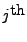 value of an individual's data is
where
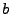 is the individual's vector of parameters, and 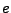 is a vector of
random variables that describe the measurement noise.
Note that is also a random variable in this case.
For a complete description of the models used at the individual
level by SPK and NONMEM, see Appendix B.
For this objective function, there is an additional set of residuals
that come from the terms that include the individual parameters .
Let the vector of residuals for the individual parameters be defined as the
differences between zero and the expected values for the individual parameters,
The covariance matrix for the individual parameters is
The vector of weighted individual parameter residuals is
defined as
where the term multiplying the residuals is the matrix square
root of the inverse of the covariance.
The individual level residuals are calculated by evaluating the
preceding quantities at the optimal values for the individuals'
vectors of parameters that were determined during
individual level estimation,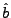.
The following table lists the residual related quantities, their
values as calculated by SPK, and their values as calculated by NONMEM.
In this case, the NONMEM values are calculated for all of the
individuals in the population using the POSTHOC option in the
$ESTIMATION command. SPK values are always calculated (whether
POSTHOC was requested or not).
|
Quantity
|
SPK Value
|
Description
|
Name
|
NONMEM Value |
|
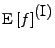
|
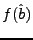
|
Predicted value for an individual's data.
|
IPRED
|
Not available in NONMEM. |
|
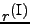
|
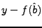
|
Residuals for an individual.
|
IRES
|
Not available in NONMEM. |
|
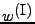
|
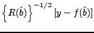
|
Weighted residuals for an individual.
|
IWRES
|
Not available in NONMEM. |
|
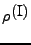
|
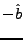
|
Individual parameter residuals.
|
IETARES
|
Not available in NONMEM. |
|
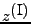
|
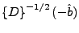
|
Weighted individual parameter residuals.
|
IWETARES
|
Not available in NONMEM. |
Next: Population Level Residuals Background
Up: Residual Calculation
Previous: Extended Least Squares Individual
Contents
Mitch Watrous
2007-12-17